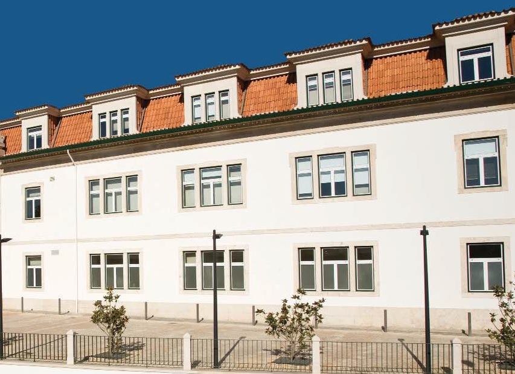

Notícias Última hora
Irmandade
O antigo hospital de Leiria localizado no centro da cidade, desactivado há largos anos, sofreu extensas obras de remodelação e modernização. Tendo reiniciado funções em Março passado com a abertura da unidade de cuidados continuados,integrada na rede nacional de cuidados continuados.
Creche
Apostando em elevados padrões de qualidade, quer no que toca à execução da obra física, quer no domínio do equipamento instalado e dos recursos humanos, pretende-se que a creche se assuma em Leiria como um espaço de referência qualitativa na área pueril, contando com uma estrutura de recursos humanos empenhada e com experiência consolidada no domínio infantil.
Lar
O Lar N. S. da Encarnação ocupa uma área de construção de 5.000 metros quadrados com espaços ajardinados envolventes.
O edifício e seu equipamento são considerados do mais moderno e funcional que se tem feito até hoje no nosso país.
Residêncial
A Residencial XXI é o local ideal para quem pretende uma opção de repouso de cariz familiar,
onde a personalidade de cada utente determina o atendimento dos diversos profissionais desta unidade.